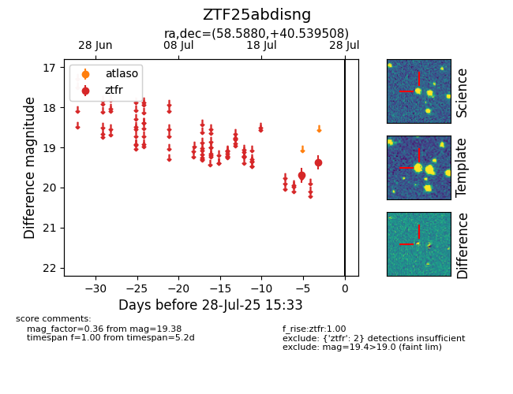

Target ZTF25abdisng at 2025-07-28 15:33, see:
FINK: fink-portal.org/ZTF25abdisng
Lasair: lasair-ztf.lsst.ac.uk/objects/ZTF25abdisng
ALeRCE: alerce.online/object/ZTF25abdisng
alt names
ZTF25abdisng (ztf,fink)
coordinates:
equatorial (ra, dec) = (58.5880,+40.53951)
galactic (l, b) = (156.4889,-10.12274)
photometry
last ztfr=19.38
2 ztfr detections
